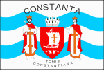

Sportivi de performanță: Simona Halep, Gheorghe Hagi
Infrastructura sportivă mai este compusă din Sala Sporturilor (2000 de locuri) aflată în centrul orașului și o Sală Polivalentă (5000 de locuri) aflată în proces de construire după planurile cunoscutului arhitect bucureștean, Radu Petre Năstase.
FC Farul Constanța înființată în 1920
CSM Constanța
FC Viitorul Constanța 2009 - 2021 (Campioană a României în sezonul 2016-2017)
HC Dobrogea Sud Constanța (8 titluri și 6 cupe)
Cu ajutorul acestor link-uri puteți vedea:
Înapoi la pagina principală